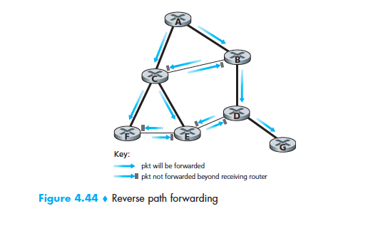
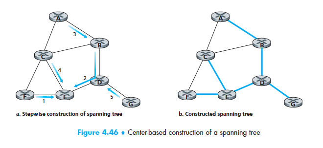
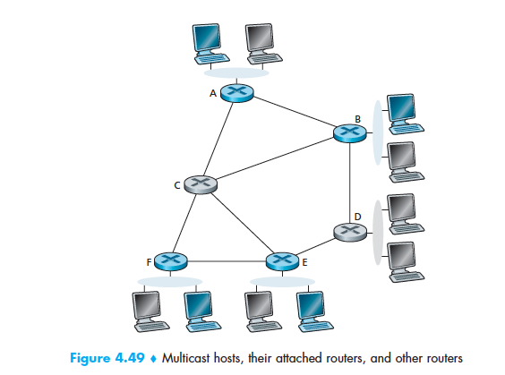

October 18th Notes
Broadcast and Multicast Routing
- In Boradcast Routing, the network layer provides a service of delivering a packet sent from a source node to all other nodes in the network
- Multicast Routing enables a single source node to send a copy of a packet to a subset of the other network nodes
Broadcast Routing Algorithms
- N-way-unicast does not require new network-layer routing protocol, packet-duplication, or forwarding functionality is needed but it can be inefficient
- Flooding is a technique for achieving broadcast where the source node sends a copy of the packet to all of it's neighbours and the the neighbours will do the same. The flaw is that this could cause a broadcast storm which would result in the duplication of packets being sent nodes which already have received the packets
- In sequence-number-controlled flooding, a source node puts its address (or other unique identifier) as well as a broadcast sequence number into a broadcast packet, then sends the packet to all of its neighbors

- Reverse path forwarding is when a router receives a broadcast packet with a given source address, it transmits the packet on all of its outgoing links (except the one on which it was received) only if the packet arrived on the link that is on its own shortest unicast path back to the source
- A spanning tree is a tree that contains each and every node in a graph. If each link has an associated cost and the cost of a tree is the sum of the link costs, then a spanning tree whose cost is the minimum of all of the graph's spanning trees is called a minimum spanning tree. If the packet was simply sent along the links of such a tree it would be easy to broadcast a packet

- Center-based approach to building a spanning tree involves picking a center node. Nodes then unicast tree-join messages addressed to the center node. A tree-join message is forwarded using unicast routing toward the center until it either arrives at a node that already belongs to the spanning tree or arrives at the center. This is how a spanning tree can be created.
Multicast Routing
- Two problems with multicast communication:
- How to identify the receivers of a multicast packet?
- How to address a packet sent to these receivers?
- Address indirection is when a single identifier is used for the group of receivers, and a copy of the packet that is addressed to the group using this single identifier is delivered to all of the multicast receivers associated with that group.
- In the Internet, the single identifier that represents a group of receivers is a class D multicast IP address. The group of receivers associated with a class D address is referred to as a multicast group
- Internet Group Management Protocol operates between a host and its directly attached router. It provides the means for a host to inform its attached router that an application running on the host wants to join a specific multicast group.
- IGMP has only three messages:
- membership_query message: Sent by a router to all hosts on an attached interface to determine the set of all multicast groups that have been joined by the hosts on that interface
- membership_report messages: Used by hosts to respond to membership_query message. It can also be generated by a host when an application first joins a multicast group without waiting for a membership_query message from the router.
- leave_group message: Used by the host to leave a multicast group. It's optional as the router infers that a host is no longer in the multicast group if it no longer responds to a membership_query message with the given group address.
- The multicast routing problem is when only a subset of routers actually needs to receive the multicast traffic. Two approaches are taken to determine a multicast routing tree to solve this problem:

- Multicast routing using a group-shared tree: Based on building a tree that includes all edge routers with attached hosts belonging to the multicast group. A center-based approach is used to construct the multicast routing tree, with edge routers with attached hosts belonging to the multicast group sending (via unicast) join messages addressed to the center node.
- Multicast routing using a source-based tree: Constructs a multicast routing tree for each source in the multicast group. an RPF algorithm (with source node x) is used to construct a multicast forwarding tree for multicast datagrams originating at source x.